Prototype status, 2 November 2026
What each app in this repo does today, how to try it on your own machine, what is not built, and what waits on you. It supersedes the 18 October status and the 24 October snapshot. It describes origin/main at 0bdd7a70 (PR #149) plus three small fixes made while writing it (see "Fixes made during this walk"). Unlike the 18 October page, which was written from sources, this one comes from a walk-through: every surface below was run on this machine the way a person would, at 1280 and 375 pixels, and given a verdict. The raw record is walkthrough.md. The page has an HTML twin: prototypes-2026-11-02.html.
What waits on you
Every item is copied from a merged PR or a decision-log entry, with its default. Nothing on this list was touched while writing this page.
- Deploy. Nothing merged since the last recorded deploy (
b9b7bc36, 16 Oct, per the 18 October page) has been deployed by this work, and this page checked no live host. Default: stay local. - The proxy fix (D-17). The Caddy
trusted_proxieschange andBL_TRUST_FORWARDED_FOR=1on the live host (deploy/README.md; opt-in forwarding landed in #84). Until then every visitor reaches the coordinator as one address. - Opening the commons. Founding parameters, the island token and when to link
/garden/are the "Your decision" rows ofdocs/garden-opening-2026-10-18.md. The draft #60 (opening-day copy, marked do not merge until opening day) is still open. Default: the garden stays private. - Paid calls and AWS. Bell v1 part C and the I02 model proposer need a yes, as does transition-hunt Stage 1 on AWS (D1 of the 2 November log lists them as held for you). Default: none run.
- The proposer bench. Planned and never approved:
tools/bench.ts approve ...is a person's act (#49, D-26). - Two draft PRs. #69 (anomaly-bell v3 first-census protocol) and #130 (I01 behaviour atlas, whose first descriptor calibration failed; a replacement D1 is pending) are open as drafts and wait for your call.
- The gene line and playtests. The next gene direction and the three-person playtest (
docs/playtest-kit-2026-10-18.md) are yours; the 2 November log lists both as held for you.
Before anything else
From a fresh clone:
pnpm install
(cd apps/coordinator && mix deps.get)Run pnpm install before any deno run (Deno 2.9 otherwise writes workspaces into package.json). The second line is what bin/dev and bin/garden-dev ask for when apps/coordinator/deps is missing. Commands below are the port-qualified forms that were run here (lab on 5301, coordinator on 6301) so that parallel work never collided. The default-port forms (5173 and 4000) are in the command table at the end, marked as read, not run. Use pnpm dev --port N without a -- separator: pnpm would pass the separator on and Vite would ignore the flags.
Status at a glance
Four separate questions per surface: is it implemented, did it work when run locally (the verdict), is its data present in a fresh clone, and is it deployed or externally verified. No row below is deployed or externally verified: nothing here touched a live host, real phones or screen readers.
| Surface | Implemented | Verified locally (verdict) | Data in a fresh clone | Deployed or externally verified |
|---|---|---|---|---|
| Lab | yes | works (app; five library pages partly) | yes | not checked |
| Public site | yes | partly (bare pnpm dev logs a 502 on /status/) | yes | not checked |
| Archipelago | yes | works | yes | not checked |
| Shared garden | yes, private | works | yes (scratch garden) | no, held private |
| AI naturalist | yes | works | partly (notebook needs runs/) | not checked |
| Evolution game | yes | works | yes | not checked |
| Research instruments | yes | works | partly (large corpora are in runs/) | not applicable |
1. Lab
What it is now. The lab (/lab/) runs a world in the browser on WebGPU, with interventions (wound, feed, drain, sun), checkpoints and replay, and a Light and a Membrane view. Since 18 October: refused Feed and Drain no longer read as "World stopped" and the firsts log survives a reload (#61); the sun letter, a logged and replayable change to the light (#62); a dedicated Membrane view (#76); Try receipts matched to the action asked (#77); the focused-view button kept inside the picker at 375 px (#122). The walk loaded the lab with no query ("Even light"), the breeder, gradient-m3 and a pond world, and ran /selftest.html, which passed 30 of 30 cases against the CPU reference on this Mac's GPU.
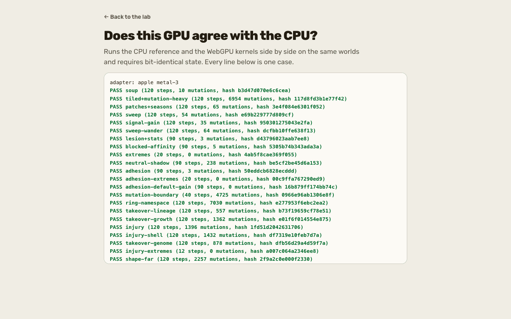
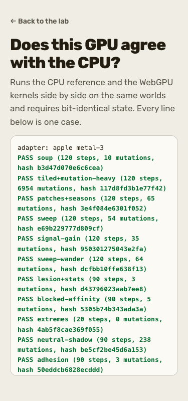
How to try it.
pnpm dev --port 5301 --strictPort- http://localhost:5301/lab/: the default world.
- http://localhost:5301/lab/?world=breeder&seed=1: the breeder (see section 6).
- http://localhost:5301/lab/?world=gradient-m3&seed=1: Field notes (see section 5).
- http://localhost:5301/selftest.html: the CPU reference against this browser's GPU, bit for bit, in about 20 seconds.
- http://localhost:5301/worlds/: every world and what it asks; each card links into the lab.
- The prototype library at http://localhost:5301/playground/ lists 15 pages (#120 landed them):
/particles/,/particles/picker/,/particles/oases/,/particles/seasons/,/particles/bonds/,/particles/motifs/,/boundaries/,/hungry-shapes/,/development/,/matter/,/currents/,/spatial/,/ecosystem/,/ecosystem/archive/and/vision-screen/./soup/(#127) is a public page linked from Worlds.
Not built. Five library pages (/playground/, /development/, /hungry-shapes/, /ecosystem/, /ecosystem/archive/) have no icon link, so a first load asks for /favicon.ico and logs a 404: their verdict is partly, follow-up F1. Hail, a shell-respecting Wound and more weather controls are deferred in pond keeper v3. The creative pages are noted in docs/creative-prototypes/README.md as kept out of the production site image until separately approved.
Waits on you. Deploy (item 1). Approving the library pages for release.
2. Public site
What it is now. Home, Worlds, How it works, About, Participate, Privacy, Status, the research journal and the 404 page, plus /soup/ (#127). The journal was brought current twice (#67, #123). Missing-page analytics and sitemap dates were closed in #80; CI builds and checks the actual site image (#89). The walk fetched all eight pages and the 404 at both widths: every h1 present, no horizontal scroll, no external request, and the public-routes, public-site, public-not-found and public-a11y browser specs passed. An unknown path answers 404 with the site's own page.
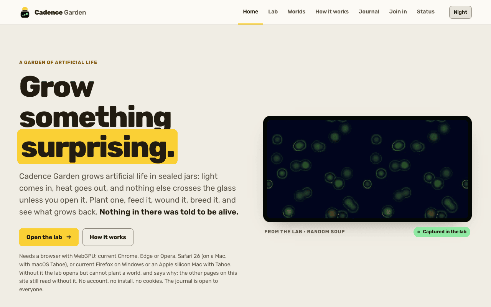
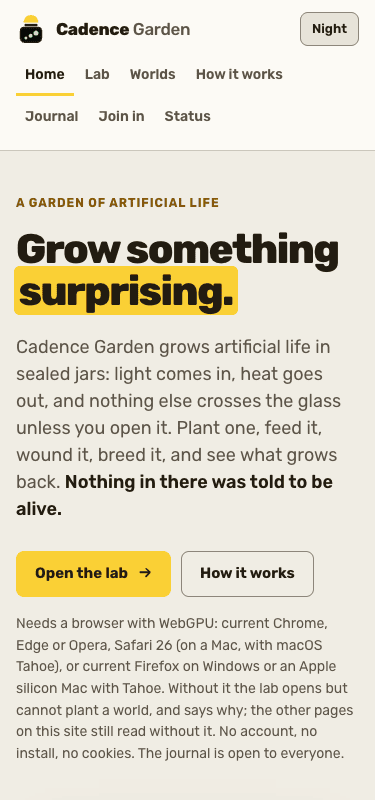
How to try it.
- http://localhost:5301/,
/research/,/worlds/,/how-it-works/,/about/,/participate/,/privacy/,/status/and a missing path such as/no-such-page/, with the dev server from section 1. - Under bare
pnpm devthe dev proxy has no coordinator:/status/and/garden/log a 502 and show their unavailable state. Startbin/dev(section 3) to see them with data.
Not built. The build check inside public-routes is skipped unless apps/lab/dist exists; no pnpm build was run. Live-domain behaviour, real devices and screen readers are not externally verified.
Waits on you. Deploy (item 1) and the proxy fix (item 2).
3. Archipelago
What it is now. The Phoenix coordinator (apps/coordinator) cuts runs into segments, hands them to islands (the browser's /island.html or the headless tools/island.ts), has a fraction replayed by a second island and compares state hashes. Since 18 October: islands release their leases and registration on a graceful stop (#74); operator counters show refusals and pruning (#75); the lease length is BL_LEASE_MS (#78); islands back off on explicitly unapplied requests (#83); CI verifies the actual coordinator image (#124); production refuses to start without a discovery join token (#125); a shared soup runs on the archipelago (#127). The walk created one tiny experiment, ran one segment on a Deno island, had a second island verify it (the segment reads "verified"), then ran a Chrome tab as an island through /island.html. The browser's segment 0 digest, 06e7413bbff0dd2a, equals the native Deno island's for the same spec. Both islands shared one machine and one GPU type, so this is same-device-type verification.
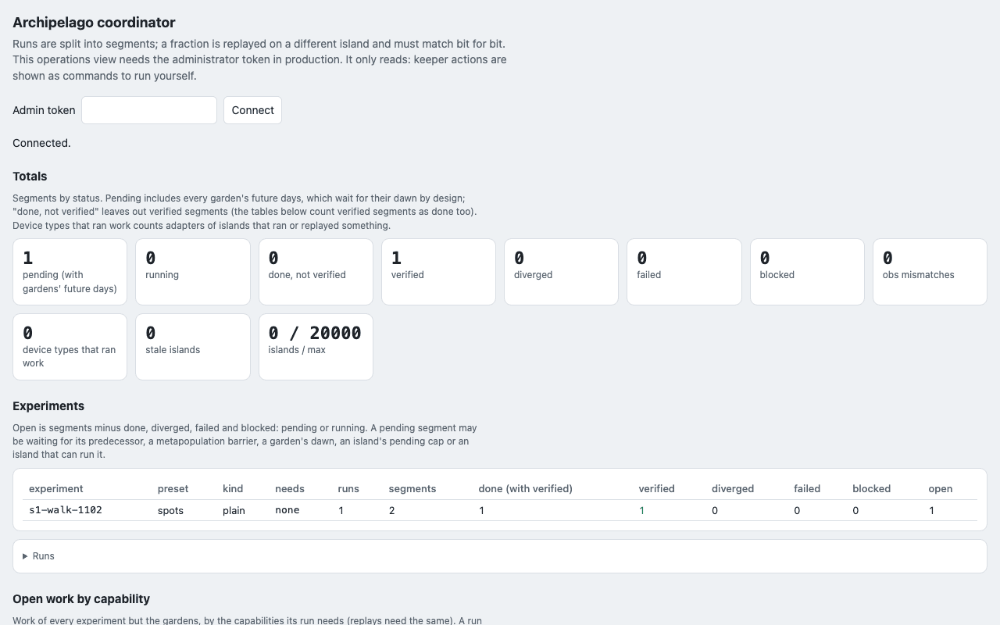
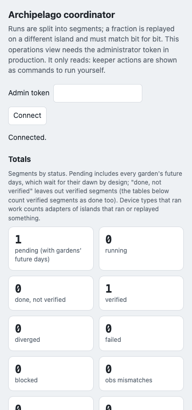
How to try it.
BL_DATA_DIR=/tmp/s1-coord-data LAB_PORT=5301 PORT=6301 bin/dev
curl -sS -X POST -H 'content-type: application/json' http://127.0.0.1:6301/api/experiments -d '{"experiment":"s1-walk-1102","presetId":"spots","conditions":["treatment"],"seeds":[1],"steps":40,"segmentSteps":20,"censusEvery":10,"verifyFraction":1.0}'
deno run -A --no-lock tools/island.ts --coordinator http://localhost:6301 --tasks 1The curl answers {"segments":2}. Run the island line a second time to verify segment 0. Then open http://localhost:6301/index.html (the operations page) and http://localhost:5301/island.html (join from a tab; it does nothing until you press Join). (cd apps/coordinator && mix phx.server) runs the coordinator alone.
Not built. Verification across different hardware (the walk had one GPU type). Distributed branch runs and hand or model pickers stay deferred (archipelago breed). The coordinator's own test suite (mix precommit) was not rerun: no coordinator code changed.
Waits on you. Deploy (item 1), the proxy fix (item 2), and setting the join token before any production start.
4. Shared garden
What it is now. One big storm world that volunteer islands grow a day at a time, with stones, the meteor (#64), sun letters with a founding switch (#62, #65), prediction receipts and, since #81, collective food on a local garden founded with GARDEN_FOOD=1. The backend is #21; the stone-horizon follow-up is #59. It is held private (the 24 October snapshot records that the release configuration keeps its files off the public site; this walk built no release image). The walk ran bin/garden-dev with food on: the garden was founded, four days were done and the tip reached day 5, run by one island and replayed by the other (day 1 was checked as "verified" by segment status), a stone sent by curl landed in day 1, and a stone sent from the page was queued for day 16. Food has three separate states and they were recorded separately: food enabled yes (the public view says so); request accepted yes (a hand posted by curl was counted, 1 of 5); collective actually fed no, because one machine cannot make five networks. The page's own "Add my hand" was then refused by the per-network budget, which is a rule and not a fault.
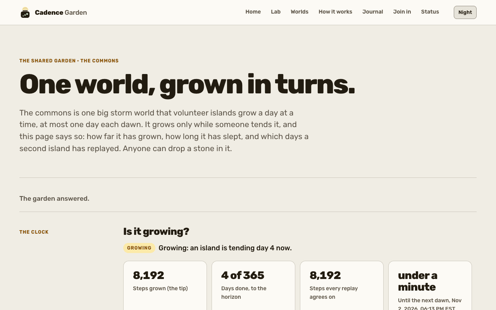
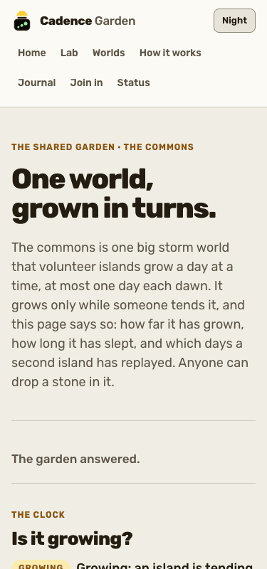
How to try it. Stop any other server on these ports first; the launcher starts its own lab, coordinator and two islands.
GARDEN_FOOD=1 LAB_PORT=5301 PORT=6301 GARDEN_DAWN_MS=5000 GARDEN_DATA_DIR=/tmp/s1-garden bin/garden-dev
curl -sS -X POST -H 'content-type: application/json' -d '{"kind":"stone","x":128,"y":128,"r":8}' http://127.0.0.1:6301/api/public/gardens/commons/letters
curl -sS -X POST -H 'content-type: application/json' -d '{}' http://127.0.0.1:6301/api/public/gardens/commons/food/handsThen open http://localhost:5301/garden/. Food is read when the garden is founded, so GARDEN_FOOD=1 must be on the first start. Stop it with Ctrl-C from a terminal; follow-up F2 records that a SIGINT sent from outside left the processes running.
Not built. A real collective landing (needs five networks). Public opening: the release configuration keeps the garden private and scheduling off.
Waits on you. Opening the commons (item 3), including the draft #60.
5. AI naturalist
What it is now. A rule-based bell that rings on a departure from neutral runs, the lab's Field notes panel with a proposer's suggestion beside each note and a "Try it here" button only a person presses, and an offline notebook. Bell v2 finished with a negative readout (#66); the prediction envelope for a naturalist that predicts interventions (#135) and its fresh-family freeze (#141) are merged. The walk played gradient-m3 seed 1 to step 15,000 in 13 seconds: the panel went from "Listening" to rings with one note, "Fewer living cells: 21,452 at step 10,000, against a neutral median there of 33,684", with its receipt. tools/notebook.ts ran on a neutral run with the full 40-run corpus present: all 40 envelope runs reproduced their record, and the neutral run rang 0 times, as it should.
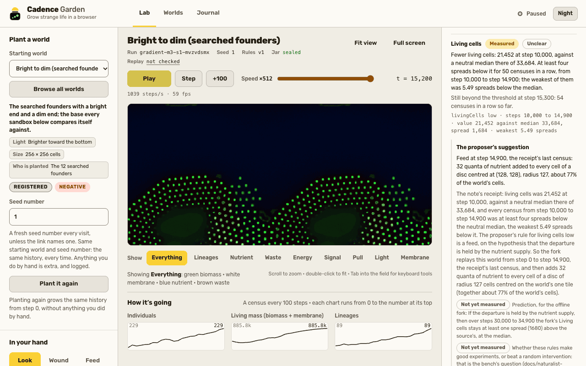
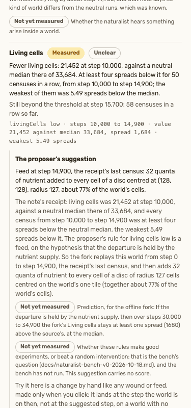
How to try it. With the dev server from section 1:
- http://localhost:5301/lab/?world=gradient-m3&seed=1, speed 9, Play until the step counter passes 15,000.
- The offline notebook needs the neutral corpus under
runs/(in the main checkout only; absent from a fresh clone):
deno run -A --no-lock tools/notebook.ts $RUNS/replay-calib/gradient-m3/neutral/seed-1001 --base $RUNS --out /tmp/s1-notebook --date 2026-11-02where RUNS is ~/develop/browser-life/runs. A committed example page is at field-notebook-2026-10-17-gradient-m3-neutral-seed-15.html.
Not built. The proposer bench has never run (bench). Notes stop at the first wound or feed, and a ring is not proof of emergence.
Waits on you. The bench approval (item 5), paid calls (item 4) and the draft #69 (item 6).
6. Evolution game
What it is now. Pond keeper on the breeder and the pond worlds: a log of firsts with rules stated in advance, a family tree, the pressure dial, Keep a lineage, weather and shells (#71), shell-ranked donors (#73) and a Membrane view (#76). The walk bred nothing by hand; it stepped the breeder to t = 500 (16 starting families listed, 113 individuals), kept a lineage ("0:11"), and ran the pond cycle for eight seconds to t = 13,664 with nine firsts logged. The six pond specs (lab-pond-keeper, -v1, -v2, -v3, lab-naturalist-actions, lab-naturalist) passed 11 checks (the 31 passed and 10 skipped in the larger run include the other files; nine skips are the not-found spec's build and Caddy checks and one is the public-routes build check, each guarded when no build or Caddy is present) by their own guards. Gene v2 and the polymer-world screens landed in #71; their readouts are Unclear or no pass at their stated scope, so they are results, not missing code.
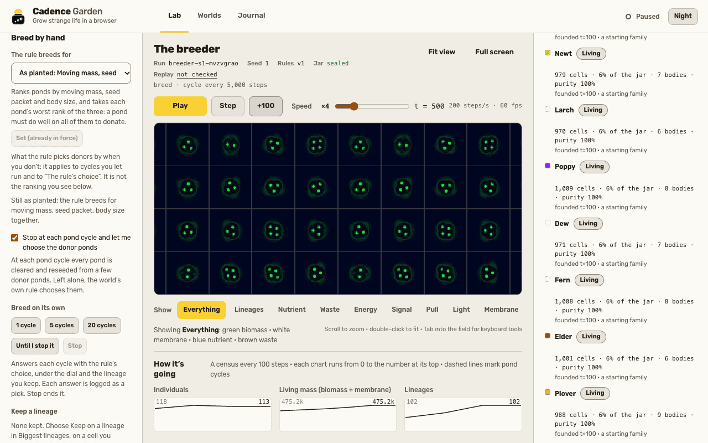
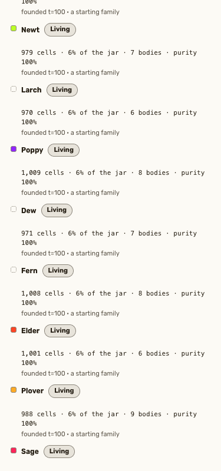
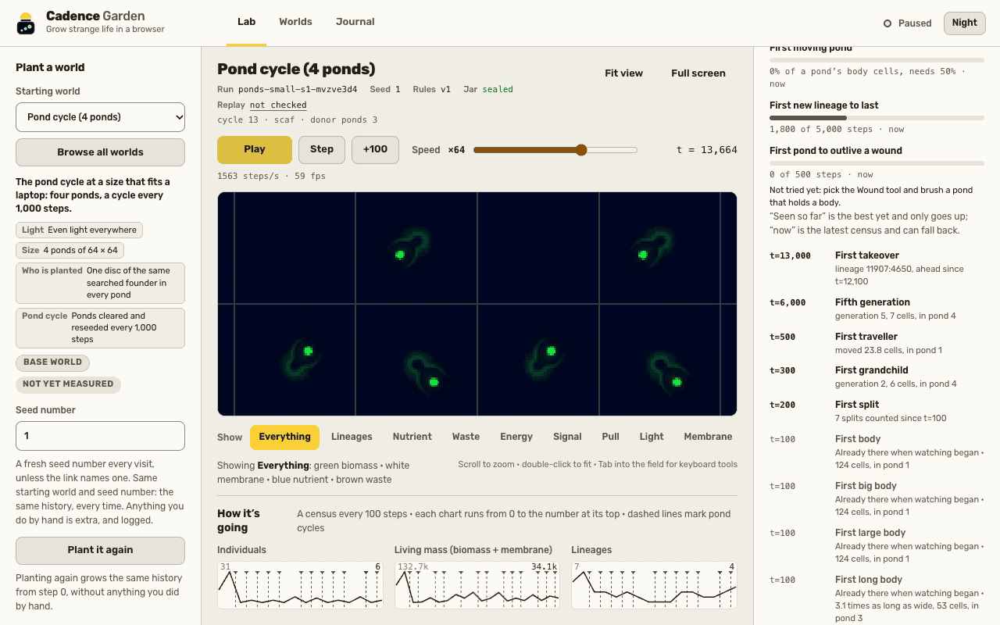
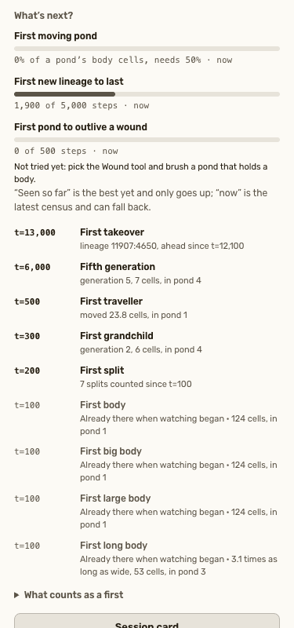
How to try it. With the dev server from section 1: http://localhost:5301/lab/?world=breeder&seed=1 (tick "Stop at each pond cycle", press +100 five times, read "Who's kin to whom?") and http://localhost:5301/lab/?world=ponds-small&seed=1 (Play at speed 6 and watch the log of firsts). The repeatable checks:
BL_E2E_PORT=5311 npx playwright test lab-pond-keeper.spec.ts lab-pond-keeper-v1.spec.ts lab-pond-keeper-v2.spec.ts lab-pond-keeper-v3.spec.ts lab-naturalist-actions.spec.ts lab-naturalist.spec.ts lab-worlds.spec.ts lab-lineage.spec.ts public-routes.spec.ts public-not-found.spec.ts public-site.spec.ts --project=chrome --workers=1Not built. A family split needs 5,000 steps of censuses, so the short walk saw none; the vitest tests carry that rule. Hail and new breeding scores are deferred ideas. Human playtests have not run.
Waits on you. The playtest and the next gene direction (item 7).
7. Research instruments
What it is now. Headless run, lineage and report tools on native WebGPU, plus the I-series pages and results landed on 2 November. The walk wrote a 3,000-step run bundle with tools/run.ts (conservation exact, 37 lineages), built a lineage dossier for its top lineage with tools/lineage.ts (1 of 1 ancestors verified against the recorded genomes), and rendered it as an HTML report with tools/report-html.ts. Merged since 18 October: the recovery assay evidence (#72), the creative playground and food-band experiments (#120, #121; #85 and #101 were closed unmerged and their work landed through those), the byte-exact program soup port (#126, #128), the I01 atlas slices 1 and 2 (#132), the predictability atlas and observer benchmark (#133), the controller-locality matrix (#136, #145), the historical-opponent assay first rung (#139), the builder to receiver transfer first rung (#142), the moving-light navigation benchmark (#144) and the assembly-inspired observer calibration (#148). Their local report pages (/predictability/, /assembly/, /niche/, /moving-light/, /controller-locality/, /opponents/) all loaded with no console error; they are static reports and no spec covers them.
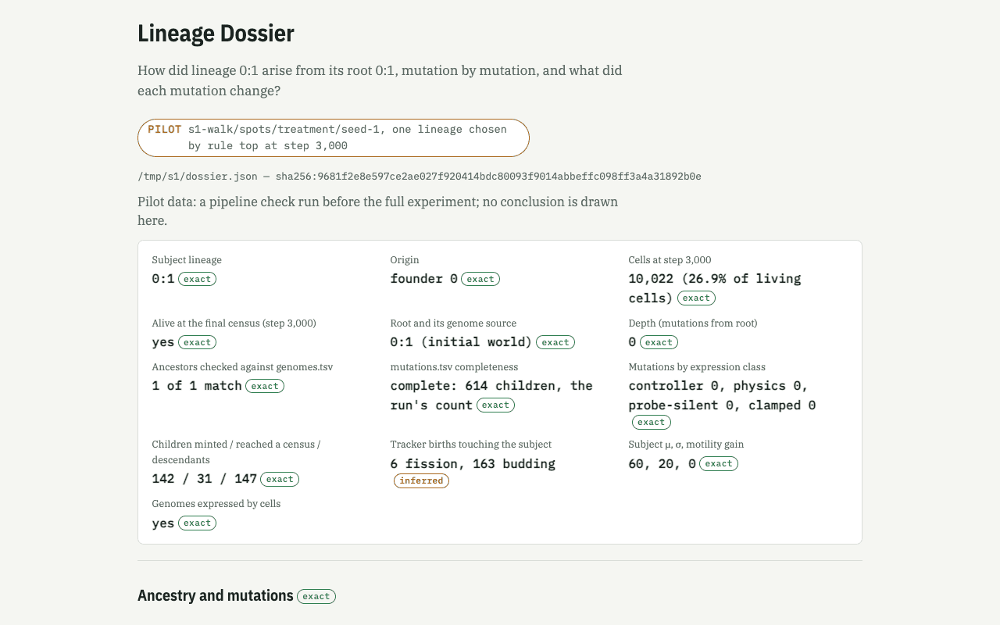
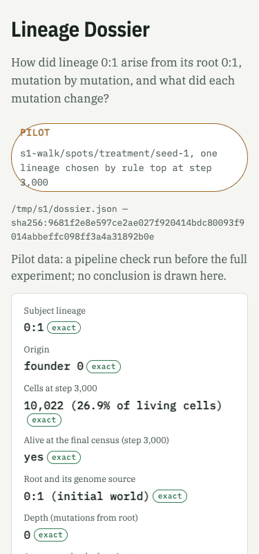
How to try it.
mkdir -p /tmp/s1
deno run -A --no-lock tools/run.ts --experiment s1-walk --preset spots --conditions treatment --seeds 1 --steps 3000 --census 100 --lineage-obs --out /tmp/s1-runs
deno run -A --no-lock tools/lineage.ts --dir /tmp/s1-runs/s1-walk/spots/treatment/seed-1 --rule top --out /tmp/s1/dossier.json
deno run -A --no-lock tools/report-html.ts lineage /tmp/s1/dossier.json --out /tmp/s1/lineage-report.html --status PILOTNever run tools/run.ts bare: its defaults are 20,000 steps and the checkout's runs/. Open the written HTML in a browser.
Not built. The I03 historical-opponent tournament and the I06 comparators belong to parallel slices and are not described here. The large scientific corpora live in runs/ of the main checkout and are absent from a fresh clone.
Waits on you. The draft #130 (item 6), AWS and paid calls (item 4).
Follow-up slices
Larger or non-local things found by the walk, each with a repro. None was fixed here.
| ID | Surface | Repro | Observed | Expected | Suspected file |
|---|---|---|---|---|---|
| F1 | Lab library | pnpm dev --port 5301 --strictPort, open /playground/ in a fresh Chrome profile with the console open; curl -s -o /dev/null -w '%{http_code}' localhost:5301/favicon.ico prints 404 | console error "Failed to load resource ... 404" on first load of five pages | no console error | add <link rel="icon" href="/favicon.svg" type="image/svg+xml"> to apps/lab/playground/index.html, development/, hungry-shapes/, ecosystem/ and ecosystem/archive/ |
| F2 | Garden launcher | start bin/garden-dev under nohup sh -c ... &, then pkill -INT -f bin/garden-dev | launcher, coordinator, Vite and both islands kept running 8 seconds later; pkill -TERM stopped them | Ctrl-C stops everything | bin/garden-dev signal handling; not reproduced from an interactive terminal |
| F3 | Public site | bare pnpm dev, open /status/ or /garden/ | console 502 from the dev proxy; page shows its unavailable state | none under the dev server, or a documented note | apps/lab/vite.config.ts proxy; low priority |
Fixes made during this walk
| Fix | Files | Regression coverage |
|---|---|---|
The Worlds page jump list has 8 links, the test counted 7 (the soup page's "A different chemistry" entry was added by feff1c1b) | tests/e2e/lab-worlds.spec.ts | the spec itself, rerun: 6 of 6 passed |
/soup/ failed 4 accessibility checks: a legend div with an aria-label and no role; the skip link goes to #soup-main on purpose | apps/lab/soup/index.html (role="group" on both legends), tests/e2e/public-a11y.spec.ts (a SKIP entry) | public-a11y filtered to soup: 5 of 5 passed |
No physics, RULE_VERSION, golden pin or defaultConfig() was touched.
Verdicts and screenshots
Rules fixed before the walk: works means it loads, logs no console error and its main action visibly completes; partly means it loads but a named action fails, needs an unlisted step or logs an error; broken means it does not load or crashes. A 200 alone is never works for a GPU page; /selftest.html is works only with 30 cases all passing and no window.__golden.error. Shots are native 1280 or 375 pixels wide by 800 tall, no crop or scale, listed in shots.json.
| Surface | Verdict | Deciding assertion | Screenshots | Walkthrough rows |
|---|---|---|---|---|
| Lab | works | scope: the lab app rows W10 to W15 (breeder, gradient-m3 and pond load, run and log no error; selftest 30 of 30); the five library pages with the favicon error are partly, listed below | 1280, 375 | W10 to W15 |
| Public site | partly | 9 routes with h1, 404 body, no scroll, 0 external requests; /status/ logs a dev-proxy 502 under bare pnpm dev (works with the coordinator up, W08, F3) | 1280, 375 | W01 to W09 |
| Archipelago | works | segment done, then verified by a second island; browser island segment equals the native digest | 1280, 375 | W39, W42 to W44 |
| Shared garden | works | scope: under bin/garden-dev (bare pnpm dev is W40, partly); four days done (tip at day 5), day 1 verified, stone landed, food states recorded separately | 1280, 375 | W41 |
| AI naturalist | works | Field notes rang at step 15,000 with a receipt; notebook reproduced the 40-run envelope | 1280, 375 | W13, W48 |
| Evolution game | works | family tree and firsts populate; six pond specs pass | 1280, 375, pond 1280, pond 375 | W11, W12, W14, W49 |
| Research instruments | works | run, lineage and report exit 0; static report pages load clean | 1280, 375 | W33 to W38, W45 to W47 |


Library pages that are partly (favicon, F1): /playground/, /development/, /hungry-shapes/, /ecosystem/, /ecosystem/archive/. The bare-pnpm dev /garden/ is also partly (no coordinator), and works under bin/garden-dev.
How this page was written
The status columns, the verdict rules and the screenshot matrix were fixed before the walk (see the plan in prototypes-2026-11-02/PLAN.md). The route inventory was enumerated from apps/lab/vite.config.ts and apps/lab/src/playground/page.ts, not from memory. Claims cite a merged PR, a doc on main or a log entry. The draft PRs #60, #69 and #130 are named as drafts; #85 and #101 were closed unmerged. Nothing was committed, deployed, paid for or run on AWS.
How each command was checked
"Ran" means executed on this checkout in this walk. "Read" means taken from the repository's own instructions and not run. The default-port forms are a documented translation of the port-qualified commands and were not run.
| Command | Default-port form (read, not run) | Check |
|---|---|---|
pnpm install | same | Ran (already up to date) |
(cd apps/coordinator && mix deps.get) | same | Ran |
pnpm dev --port 5301 --strictPort | pnpm dev (lab on 5173) | Ran |
BL_DATA_DIR=/tmp/s1-coord-data LAB_PORT=5301 PORT=6301 bin/dev | bin/dev (5173 and 4000) | Ran |
curl -sS -X POST -H 'content-type: application/json' http://127.0.0.1:6301/api/experiments -d '{"experiment":"s1-walk-1102","presetId":"spots","conditions":["treatment"],"seeds":[1],"steps":40,"segmentSteps":20,"censusEvery":10,"verifyFraction":1.0}' | same body against localhost:4000 | Ran (HTTP 200, 2 segments) |
deno run -A --no-lock tools/island.ts --coordinator http://localhost:6301 --tasks 1 | --coordinator http://localhost:4000 | Ran twice (run, then verify) |
GARDEN_FOOD=1 LAB_PORT=5301 PORT=6301 GARDEN_DAWN_MS=5000 GARDEN_DATA_DIR=/tmp/s1-garden bin/garden-dev | GARDEN_FOOD=1 bin/garden-dev | Ran |
curl -sS -X POST -H 'content-type: application/json' -d '{"kind":"stone","x":128,"y":128,"r":8}' http://127.0.0.1:6301/api/public/gardens/commons/letters | same against :4000 | Ran (HTTP 201) |
curl -sS -X POST -H 'content-type: application/json' -d '{}' http://127.0.0.1:6301/api/public/gardens/commons/food/hands | same against :4000 | Ran (HTTP 201, counted) |
deno run -A --no-lock tools/notebook.ts $RUNS/replay-calib/gradient-m3/neutral/seed-1001 --base $RUNS --out /tmp/s1-notebook --date 2026-11-02 | same | Ran; needs data (the corpus in the main checkout's runs/) |
mkdir -p /tmp/s1 | same | Ran |
deno run -A --no-lock tools/run.ts --experiment s1-walk --preset spots --conditions treatment --seeds 1 --steps 3000 --census 100 --lineage-obs --out /tmp/s1-runs | same | Ran |
deno run -A --no-lock tools/lineage.ts --dir /tmp/s1-runs/s1-walk/spots/treatment/seed-1 --rule top --out /tmp/s1/dossier.json | same | Ran |
deno run -A --no-lock tools/report-html.ts lineage /tmp/s1/dossier.json --out /tmp/s1/lineage-report.html --status PILOT | same | Ran |
BL_E2E_PORT=5311 npx playwright test lab-pond-keeper.spec.ts lab-pond-keeper-v1.spec.ts lab-pond-keeper-v2.spec.ts lab-pond-keeper-v3.spec.ts lab-naturalist-actions.spec.ts lab-naturalist.spec.ts lab-worlds.spec.ts lab-lineage.spec.ts public-routes.spec.ts public-not-found.spec.ts public-site.spec.ts --project=chrome --workers=1 | default port 5174 | Ran (31 passed, 10 skipped, 1 failed then fixed) |
(cd apps/coordinator && mix phx.server) | same | Read |